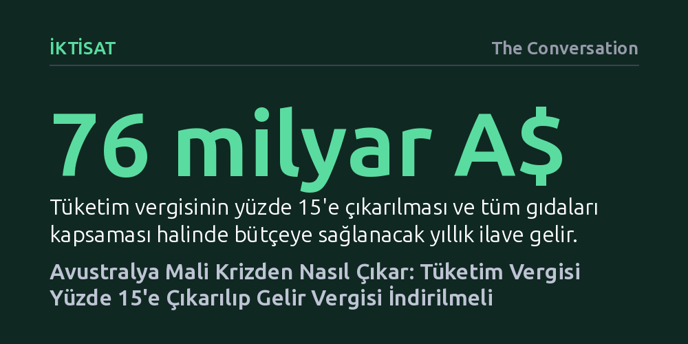

IKTISAT · The Conversation · 2026-10-19
Avustralya'da eyalet borçlarını eritmek ve yaşlanan nüfusun vergi yükünü hafifletmek için tüketim vergisinin yüzde 10'dan 15'e çıkarılması, buna karşılık gelir vergisi indirimi ve sosyal yardım artışı yapılması öneriliyor. Bu reformun yıllık 76 milyar Avustralya doları ek kamu geliri yaratması öngörülüyor.
Tüketim vergisini artırmanın dar gelirlileri ezeceği ezberini bozarak, geniş tabanlı bir vergi artışının gelir vergisi indirimi ve hedefe yönelik sosyal yardımlarla dengelendiğinde eşitsizliği azaltabileceğini gösteriyor.

Avustralya'da 2000 yılında Mal ve Hizmet Vergisi (GST) yürürlüğe girdiğinde, bu sadece teknik bir maliye hamlesi değil, federal hükümet ile eyaletler arasındaki görev paylaşımının yeniden kurulmasıydı. Federal yönetim toplanan tüketim vergisinin tamamını eyaletlere bırakmayı taahhüt etmiş, karşılığında eyaletler dar tabanlı ve verimsiz yerel vergilerden vazgeçmişti. Amaç, eyaletlerin sağlık, eğitim ve bayındırlık gibi temel kamu hizmetlerini sürdürülebilir bir gelir kaynağıyla finanse etmesiydi. Ancak aradan geçen çeyrek asrın ardından bu mekanizma artık hedefin çok gerisinde kalıyor.
Eyalet yönetimlerinin toplam borcu 2019 ile 2025 yılları arasında iki kattan fazla arttı ve tırmanışını sürdürüyor. Salgın öncesinde ulusal kamu borcunun yalnızca beşte birini oluşturan eyalet borçlarının, 2030 yılına gelindiğinde ulusal borcun neredeyse yüzde 38'ine ulaşacağı hesaplanıyor. Yükselen faizler tabloyu daha da ağırlaştırıyor; eyaletler artık konut desteği, kentsel hizmetler ve çevre korumaya ayırdıkları toplam kaynaktan daha fazlasını borç faizine ödüyor.
Eyalet bütçelerinin yüzde 40'ından fazlası federal transferlere bağımlı durumda. Eyaletlerin kendi topladığı damga vergisi veya madencilik gelirleri ise piyasa dalgalanmalarına karşı fazlasıyla kırılgan. Açığı kapatmak için federal hükümetin şartlı olarak tahsis ettiği ödenekler ise taraflar arasındaki müzakereleri giderek yıpratıcı bir bilek güreşine dönüştürüyor. Harcamaları kısmak tek başına bütçeleri düzlüğe çıkarmaya yetmediği için gelir yapısının kökten yenilenmesi gerekiyor.
Ekonomi kuramında tüketim vergileri, çalışma veya yatırım kararlarını en az bozan, dolayısıyla ekonomik açıdan en 'verimli' vergiler arasında kabul edilir. Bireylerin harcamalarını ister ücretten ister emeklilik birikiminden ister servetten karşılasın doğrudan vergilendirdiği için tabanı geniştir. Buna rağmen Avustralya'da GST gelirlerinin gayrisafi yurtiçi hasılaya oranı, 2007'deki yüzde 3,7 seviyesinden 2025'te yüzde 3,3'e kadar gerilemiş durumda.
Bu zayıflığın iki temel gerekçesi var. İlki, Avustralya'nın uyguladığı yüzde 10'luk vergi oranının gelişmiş ülke standartlarına göre oldukça düşük kalması. İkincisi ise kira, sağlık, eğitim ve temel gıda maddelerinin vergi dışı bırakılması sebebiyle toplam tüketim harcamalarının yalnızca yüzde 54'ünün vergilendirilebilmesi. Üstelik bu istisnalar mantıksız çelişkiler barındırıyor; örneğin donmuş patates, krema veya domuz pastırması vergiden muafken, kavrulmuş kuruyemişler ve paketli salatalar vergilendiriliyor.
Sorun demografik dönüşümle daha da derinleşiyor. Kamu gelirlerinin belkemiği olan bireysel gelir vergisi, giderek küçülen bir çalışan kesimin omuzlarına yükleniyor. 70 yaşın üzerindeki Avustralyalıların beşte dördünden fazlası hiç gelir vergisi ödemezken, bu yaş grubunun toplam nüfustaki payı hızla artıyor. Vergi sistemi tüketim tabanına kaydırılmazsa, yaşlanan toplumun sağlık ve bakım harcamalarını taşımak imkânsızlaşacak.
Grattan Institute tarafından hazırlanan reform teklifi, tüketim vergisi oranının yüzde 10'dan yüzde 15'e çıkarılmasını ve istisnaların kaldırılarak tüm gıda maddelerinin sisteme dahil edilmesini öneriyor. Bu değişikliğin federal bütçeye her yıl fazladan yaklaşık 76 milyar Avustralya doları gelir kazandıracağı öngörülüyor. Ancak öneri bu geliri devlette tutmak yerine toplumsal refahı yeniden dağıtacak bir takas planı sunuyor.
Paketin 33 milyar dolarlık bölümü, son yirmi yılın en büyük bireysel gelir vergisi indirimini finanse etmeye ayrılıyor. Böylece çalışanların sırtındaki vergi baskısı hafifletiliyor. Yaklaşık 25 milyar dolarlık pay ise sosyal refah ağını güçlendirmek için kullanılacak. Bu kapsamda işsizlik ve gençlik ödeneklerine yüzde 20, kira yardımına yüzde 50 ve emekli maaşlarına yüzde 8 artış yapılması planlanıyor.
Geriye kalan ilave gelir ise doğrudan eyaletlere aktarılacak. Eyaletlerin bu kaynağı öncelikle mevcut borçlarını eritmek ve zaman içinde konut piyasasını kilitleyen damga vergisi gibi verimsiz harçları tasfiye etmek için kullanması hedefleniyor. Bu reform aynı zamanda Batı Avustralya'yı kayıran ve federal bütçeye yıllık 6 milyar dolara mal olan tartışmalı gelir bölüşüm kuralının revize edilmesi için de uygun bir zemin sunuyor.
Tüketim vergisinin yükseltilmesine ve özellikle gıdanın vergi kapsamına alınmasına yönelik en yaygın itiraz, bu adımın dar gelirli haneleri ezeceği iddiasıdır. Ancak veriler, gıda muafiyetlerinin dar gelirlileri gözetmek için son derece kaba ve verimsiz bir araç olduğunu kanıtlıyor. Varlıklı haneler çok daha fazla ve pahalı gıda tükettiği için, gıdadaki vergi istisnasının sağladığı parasal tasarrufun yalnızca üçte biri en yoksul yüzde 40'lık kesime ulaşıyor; aslan payı üst gelir dilimlerinde kalıyor.
Bu sebeple gıdayı vergiden muaf tutmak yerine, bütün harcamalardan vergi toplayıp elde edilen hasılatı doğrudan nakit refah yardımları ve kira destekleriyle ihtiyaç sahiplerine yönlendirmek çok daha adil bir netice veriyor. Simülasyonlara göre bu paket hayata geçtiğinde, toplumun en yoksul yüzde 40'ı net olarak öncekinden daha iyi bir maddi duruma kavuşurken, yüksek gelirli haneler sadece makul ölçüde daha fazla vergi ödemiş oluyor.
Hiçbir toplum daha fazla vergi vermekten hoşlanmaz; fakat nitelikli hastaneler, güvenli yollar ve güçlü sosyal güvenlik ağları kaynak olmadan sürdürülemez. Avustralya'nın yaşam standardını korumak, popülist istisnalara tutunmak yerine tabanı genişletilmiş tüketim vergisi ile hedefe kilitlenmiş sosyal transferleri birleştiren cesur bir mali mimariyi gerektiriyor.